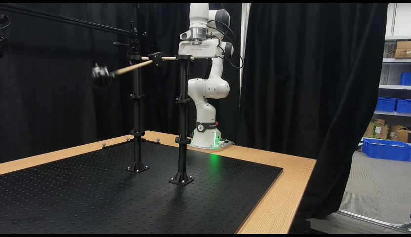
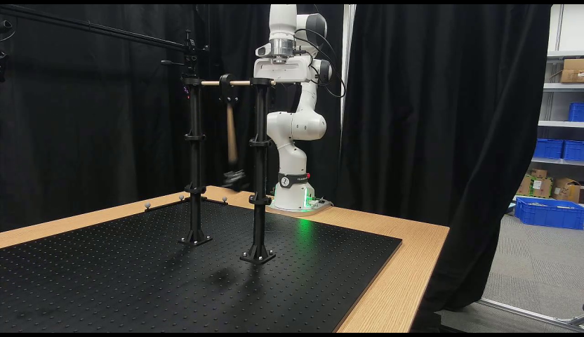
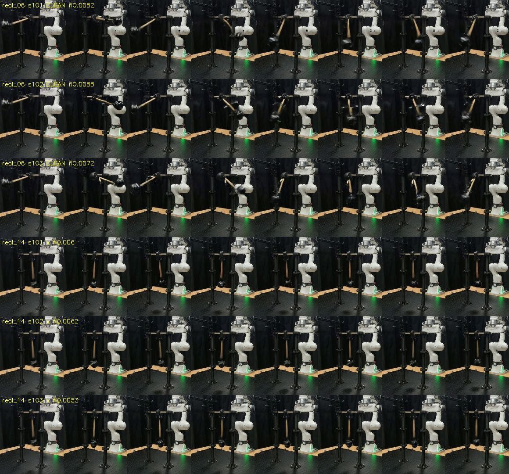

TASK 277 • DK1 RESULTS • SOURCE 124b6d5 • PRESENTATION ONLY
A supplied pendulum period transfers on a fresh input. The second input fails QC.
Three new seeds succeed on real_06. All three Nano-Phys attempts on real_14 are rejected by the frozen motion-quality gate.
Attributed to dk1's completed task 277 and review #6700. This addendum reuses existing outputs; it adds no independent measurement.
Keep every attempt in the denominator
Each arm: 2 inputs × 3 seeds. Nano-Phys's 3/6 successes all come from real_06. Accepted-only source interval:[1.000645,1.005342], resampling three seeds from one take.
The target period is supplied from later real video. This demonstrates conditional period transfer, not inference from the first frame. Two fresh inputs share one GAUGE rig.
The two source inputs

real_06: visible angle≈74°; supplied P=1.199895s. Nano-Phys3/3 clean.
real_14: visible angle≈4°; supplied P=1.187767s. Nano-Phys0/3 clean.The control transfers numerically, with gate rejection retained
On real_06, ×1.7 gives ACF ratios 1.725/1.697/1.700 and measure_pend ratios 1.716/1.679/1.706 over seeds 101–103. These are ungated numerical readings. ACF flags check, so all three remain rejected. Overall ×1.7 is0/6 clean.
On real_14, ACF values near 1 disagree with the other reader (R² 0.27–0.48). The cause remains a hypothesis; task 329 tests a supplied amplitude separately. A still pose does not determine angular velocity.
Independent saved-result review #6730 finds only one of six main-arm pairs clean in both arms (real_06 seed102). Selected arm medians are not a six-pair improvement estimate. Real14 QC rejection shows unresolved reader disagreement, not proof that the rendered swing failed or that amplitude caused it.
All 18 saved rows
Ratios below divide the author's saved period by its supplied reference. Rejected values stay visible; they are excluded from accepted-only summaries. A dash means the source period is missing.
18 saved rows
Exact frozen gate and uncertainty scope
ACF flag ok AND luminance flicker<0.08 AND reader period agreement within10%. It does not require the measure_pend flag to be ok: plain real_06 seed102 is source-clean with MP flag check. No gate has been changed. The source bootstrap resamples only three accepted Nano-Phys clips from one take, not all six attempts or independent rigs. No additional uncertainty has been estimated here.
The author's contact sheets

Unmodified source sheets: six rows per arm, eight cropped/resized frames per clip. First three rows real_06; last three real_14; seeds 101–103. Author labels include the frozen gate. Click for full resolution. Static images are not a playback check.
What this demo does not establish
- A general first-frame-only recipe: period comes from future real video; geometry is manually supplied (±6px). Release-from-rest is assumed. The large-angle harmonic proxy does not certify nonlinear physics.
- NVIDIA non-regression: task 277 has no new NVIDIA scores. The separate task 319 quality scorecard reports about 0.057 lower DOVER on its own cohort. Its seed1-only control is consistent with a common proxy-path cost; equivalence and cause are unresolved.
- Independent validation by this page: it packages dk1's outputs. Historical crossing reader 289/raw FAIL and non-rest state 296 were not used. Plausibility judge, robot prediction and new rigs remain untested.
Actual setup reported by source: Cosmos3-Nano; q8 server 04e8e0de81; UniPC; sigma_start 0.89844/start19; 832×480;93 frames at 24 fps;35 steps;CFG 6;CPU noise; seeds 101–103. Real reference periods use an assumed 25 Hz clock.